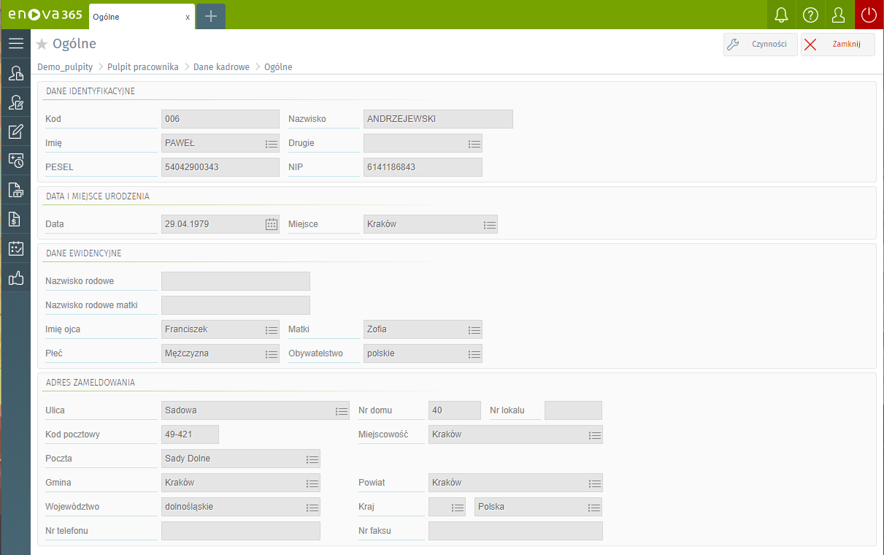
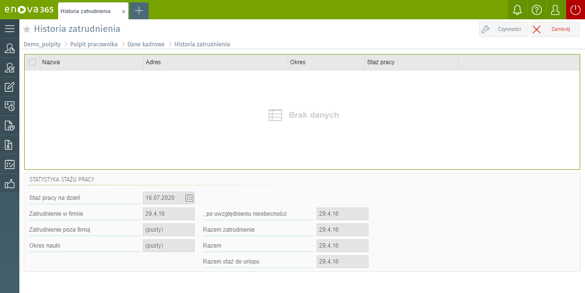

Ogólne
W części ogólnej znajdują się informacje dotyczące danych identyfikacyjnych oraz ewidencyjnych pracownika:
Dane identyfikacyjne: Kod, Numer akt personalnych, Nazwisko, Imię, Drugie imię, PESEL.
Data i miejsce urodzenia: Data urodzenia, Miejsce urodzenia.
Dane ewidencyjne: Nazwisko rodowe, Nazwisko rodowe matki, Imię ojca, Imię matki, Płeć, Obywatelstwo.
Adres zameldowania: Ulica, Numer domu, Numer lokalu, Kod pocztowy, Miejscowość, Poczta, Gmina, Powiat, Województwo, Kraj, Numer telefonu, Numer faksu.

Historia zatrudnienia
Formularz zawiera historię zatrudnienia pracownika w poprzednich zakładach pracy. Historia zapamiętywana jest w postaci listy miejsc zatrudnienia. Pojedynczy zapis opisujący miejsce zatrudnienia to:
Nazwa i adres zakładu pracy, Okres zatrudnienia. Okres zatrudnienia zapisywany jest w formacie: data od … data do. W przypadku niezakończonych okresów zatrudnienia: data od …
Na podstawie odnotowanego okresu zatrudnienia naliczany jest staż pracy. Jest on wyświetlany w formacie: lata, miesiące, dni, w polu Staż pracy.
